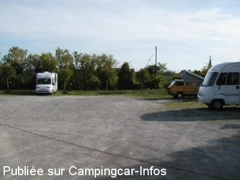
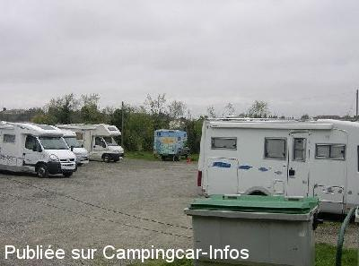

ASN = Aire de services avec stationnement nuit possible de :
FANJEAUX
(N° 318)
Accès/adresse :
Chemin Fontanelles
11270 FANJEAUX
11270 FANJEAUX
Latitude : (Nord) 43.18605° Décimaux ou 43° 11′ 9′′
Longitude : (Est) 2.0323° Décimaux ou 2° 1′ 56′′
Tarif : Gratuit
Type de borne : Autre
Services :


Commerces Restauration
Autres informations :
Ouverte toute l'année
8 emplacements
Tel : +33(0)468 247 001

Le 29/07/2007 par MICO

Le 30/04/2006 par FAROME 76
de
S albert
le 25/07/2015 :
Bonjour.
Sommes passes sur cette aire, en fait, il s'agit d'un terrain herbeux avec une borne plus que vieille. Les prises electriques sont Hs. Mais le reste de le borne fonctionne. Endroit tres calme, c'est vrai.
Donc, pour etape, c'est tres bien.
A plus.
Bonjour.
Sommes passes sur cette aire, en fait, il s'agit d'un terrain herbeux avec une borne plus que vieille. Les prises electriques sont Hs. Mais le reste de le borne fonctionne. Endroit tres calme, c'est vrai.
Donc, pour etape, c'est tres bien.
A plus.
de
soum
le 03/04/2014 :
merci a la municipalité aire très calme et village au commercants très aceuillants nous reviendrons aussi pour acheter des charantaises encore merci
merci a la municipalité aire très calme et village au commercants très aceuillants nous reviendrons aussi pour acheter des charantaises encore merci
de
Jacques 38
le 15/09/2013 :
De passage en aout 2013, aire sympa, calme, dans un joli petit village à découvrir, seul bémol impossible de vidanger les eaux grises sans un grand tuyau.
Mérite quand même le détour
De passage en aout 2013, aire sympa, calme, dans un joli petit village à découvrir, seul bémol impossible de vidanger les eaux grises sans un grand tuyau.
Mérite quand même le détour
de
HERVE
le 16/04/2013 :
12/04/13
de passage ,endroit agréable ,services vraiment "artisanaux" mais il y a quelques années tous cela n'existait pas ,donc arretont de nous croire dans des campings ,soyons contents que l'on nous tolère encore malgres tous ces CC pas toujours tolérant envers les petites communes
12/04/13
de passage ,endroit agréable ,services vraiment "artisanaux" mais il y a quelques années tous cela n'existait pas ,donc arretont de nous croire dans des campings ,soyons contents que l'on nous tolère encore malgres tous ces CC pas toujours tolérant envers les petites communes
de
Damien
le 19/08/2012 :
Pour le stationnement rien à redire, aire super sympa.
Concernant les services, comme bon nombre de bornes Cathares qui sont toutes dans un état déplorable dans ce beau département touristique!Un renouvellement s'impose.
Monsieur le Maire, vice président de La communauté de communes en charge du tourisme, ne pourriez vous pas faire remonter le problème à M. le président du conseil général et président de la communauté de communes, qui je sais est très sensible à la manne financière que représente le tourisme pour notre département.
Un camping cariste Audois qui a honte de l'état de nos bornes de services.
Pour le stationnement rien à redire, aire super sympa.
Concernant les services, comme bon nombre de bornes Cathares qui sont toutes dans un état déplorable dans ce beau département touristique!Un renouvellement s'impose.
Monsieur le Maire, vice président de La communauté de communes en charge du tourisme, ne pourriez vous pas faire remonter le problème à M. le président du conseil général et président de la communauté de communes, qui je sais est très sensible à la manne financière que représente le tourisme pour notre département.
Un camping cariste Audois qui a honte de l'état de nos bornes de services.
de
Bruno
le 25/02/2012 :
De passage faisant route vers Carcassonne, je me suis arrêté une nuit sur cette aire. Elle est bien placée certes en hauteur, mais très proche du centre de la commune. La borne est à revoir particulièrement le branchement EDF qui semble avoir été bidouillé avec une prise multiple raccordée à l'air libre ( donc pas utilisé pour éviter toute mésaventure). L'approvisionnement en eau porpre est normal aux autres bornes, pour les vidanges des EU, prévoir un sceau ou un tuyau de vidange. Merci à la Municipalité pour ce lieu agréable mis à notre disposition.
De passage faisant route vers Carcassonne, je me suis arrêté une nuit sur cette aire. Elle est bien placée certes en hauteur, mais très proche du centre de la commune. La borne est à revoir particulièrement le branchement EDF qui semble avoir été bidouillé avec une prise multiple raccordée à l'air libre ( donc pas utilisé pour éviter toute mésaventure). L'approvisionnement en eau porpre est normal aux autres bornes, pour les vidanges des EU, prévoir un sceau ou un tuyau de vidange. Merci à la Municipalité pour ce lieu agréable mis à notre disposition.
de
tessier guy
le 07/11/2011 :
De passage, en octobre, petit coin sympa, pour environ 8 CC au calme comme je les aiment , pour le reste ça fait faire du sport ,et je ne m en plaint pas merci a la communne
De passage, en octobre, petit coin sympa, pour environ 8 CC au calme comme je les aiment , pour le reste ça fait faire du sport ,et je ne m en plaint pas merci a la communne
de
Sombreffe
le 31/08/2011 :
services un peu limite au niveau pratique en effet et aire très mal indiquée dans le village. Sinon village magnifique en effet et aire plate, qui doit être relativement calme en temps normal (nous y étions la nuit du 14 au 15 août, c´était le bazar dans des tentes plantées dans un jardin jouxtant l´aire).
Je note l´adresse pour le cassoulet, car celui que nous avons mangé à Carcassonne ne cassait rien!
services un peu limite au niveau pratique en effet et aire très mal indiquée dans le village. Sinon village magnifique en effet et aire plate, qui doit être relativement calme en temps normal (nous y étions la nuit du 14 au 15 août, c´était le bazar dans des tentes plantées dans un jardin jouxtant l´aire).
Je note l´adresse pour le cassoulet, car celui que nous avons mangé à Carcassonne ne cassait rien!
de
micheleve
le 10/05/2010 :
Emplacement très agréable pour stationner, commerces à proximité. Village et panorama sur la région magnifiques. Un seul point négatif : l'aire de services. Messieurs les élus, consacrez un peu de budget à sa remise en état. Les camping-caristes sont un apport de vie à vos commerces.
Emplacement très agréable pour stationner, commerces à proximité. Village et panorama sur la région magnifiques. Un seul point négatif : l'aire de services. Messieurs les élus, consacrez un peu de budget à sa remise en état. Les camping-caristes sont un apport de vie à vos commerces.
de
Zoulou
le 21/11/2009 :
C' est vrai, pas d'électricité, aucune sécurité. Le robinet d'eau fonctionne. Vidanges au seau. Mais aussi coin très agréable et c'est gratuit.
C' est vrai, pas d'électricité, aucune sécurité. Le robinet d'eau fonctionne. Vidanges au seau. Mais aussi coin très agréable et c'est gratuit.
de
max
le 04/06/2008 :
Beau village. Belle aire très recherchée mais on trouve maintenant de la place depuis que la commune fait circuler les véhicules ventouses. Belles balades.
Beau village. Belle aire très recherchée mais on trouve maintenant de la place depuis que la commune fait circuler les véhicules ventouses. Belles balades.
de
MICO
le 29/07/2007 :
Je vous recommande une balade à pied sur les hauteurs du village et quel village! Vues panoramiques tout autour, vielles batisses et marché couvert, bref un coup de coeur!
Je vous recommande une balade à pied sur les hauteurs du village et quel village! Vues panoramiques tout autour, vielles batisses et marché couvert, bref un coup de coeur!
de
le 20/09/2006 :
Aire à deux minutes du village avec tous les services gratuits électricité comprise, calme la nuit. Il faut arriver de bonne heure dans l'après midi si vous voulez avoir une place, car à partir de 18H, les places deviennent rares.
Merci à la ville de FANJEAUX d'avoir mis à la disposition des camping-caristes cette aire avec les services gratuits. Il est décevant de voir certains camping-caristes prendre l'aire pour un camping en déroulant leur tapis et en installant table, chaises et relax.
Aire à deux minutes du village avec tous les services gratuits électricité comprise, calme la nuit. Il faut arriver de bonne heure dans l'après midi si vous voulez avoir une place, car à partir de 18H, les places deviennent rares.
Merci à la ville de FANJEAUX d'avoir mis à la disposition des camping-caristes cette aire avec les services gratuits. Il est décevant de voir certains camping-caristes prendre l'aire pour un camping en déroulant leur tapis et en installant table, chaises et relax.